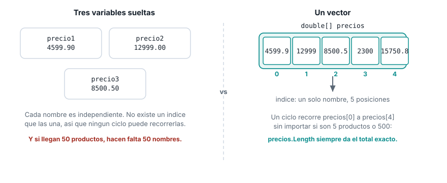
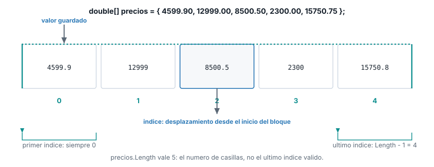

Unidad 2. Estructuras de datos tipo arreglo: vectores
| Asignatura | Herramientas de Programación I (ET0047) |
| Programa | Tecnología en Desarrollo de Software |
| Unidad | Unidad 2. Creando aplicaciones informáticas utilizando arreglos y funciones |
| Saber | Estructura de datos tipo vectores y matrices |
Esta guía se probó con el SDK de .NET 10.0.302.
1 El problema que resuelve un arreglo
Las notas de un grupo de estudiantes
Te piden un programa que guarde las notas de un grupo de 5 estudiantes, calcule el promedio del grupo y muestre cuáles estudiantes quedaron por encima de ese promedio.
Antes de seguir leyendo, resuélvelo con lo que ya sabes: variables, tipos de datos, entrada y salida por consola, condicionales y ciclos (Semanas 2 a 5). ¿Cómo lo harías?
La respuesta más probable, con lo visto hasta ahora, es declarar una variable por estudiante:
double nota1 = 4.2;
double nota2 = 3.8;
double nota3 = 4.7;
double nota4 = 2.9;
double nota5 = 3.5;
double promedio = (nota1 + nota2 + nota3 + nota4 + nota5) / 5;
Console.WriteLine($"Promedio del grupo: {promedio:F2}");
if (nota1 > promedio) Console.WriteLine("Estudiante 1 esta por encima del promedio");
if (nota2 > promedio) Console.WriteLine("Estudiante 2 esta por encima del promedio");
if (nota3 > promedio) Console.WriteLine("Estudiante 3 esta por encima del promedio");
if (nota4 > promedio) Console.WriteLine("Estudiante 4 esta por encima del promedio");
if (nota5 > promedio) Console.WriteLine("Estudiante 5 esta por encima del promedio");Promedio del grupo: 3,82
Estudiante 1 esta por encima del promedio
Estudiante 3 esta por encima del promedioFunciona, con 5 estudiantes. Pero míralo con cuidado: la suma del promedio repite cinco nombres de variable, y la comparación contra el promedio repite la misma línea de if cinco veces, cambiando solo el número. Nada en el programa dice “estas cinco variables son el mismo tipo de dato, recórrelas juntas”: son cinco nombres sueltos, sin ninguna relación entre sí para el compilador.
Ahora la pregunta que rompe esta idea: ¿y si el grupo fuera de 100 estudiantes? Habría que escribir 100 variables, 100 sumandos en el promedio y 100 condicionales, uno por uno, a mano. Ningún for puede recorrerlas, porque un ciclo necesita un índice para saber a cuál variable ir a buscar en cada vuelta, y nota1, nota2, …, nota100 no comparten ningún índice. El programa crece exactamente al mismo ritmo que el problema, en vez de crecer una sola vez y quedarse fijo.
El mismo problema en el proyecto del semestre
Esto no es exclusivo de las notas. En la Semana 2 registraste un producto: nombre, precio y cantidad, cada uno en su propia variable. Ese enfoque funciona mientras el sistema de gestión maneje un producto a la vez. El proyecto del semestre ya no se conforma con eso: necesita guardar el precio de varios productos para poder sumarlos, ordenarlos o buscarlos. La misma idea de variables sueltas aparece otra vez, y falla por la misma razón:
double precio1 = 4599.90;
double precio2 = 12999.00;
double precio3 = 8500.50;
double total = precio1 + precio2 + precio3;
Console.WriteLine($"Total con variables sueltas: {total}");Total con variables sueltas: 26099,4El programa funciona, pero rompe apenas el inventario deja de ser fijo. Si mañana llegan 4 productos en vez de 3, hay que escribir precio4 y reescribir la suma. Si llegan 50, hacen falta 50 nombres de variable, y ningún for puede recorrerlos: un ciclo necesita un índice para saber a cuál variable ir a buscar en cada vuelta, y precio1, precio2 y precio3 no comparten ningún índice entre sí. Son tres nombres sueltos que el compilador trata como si no tuvieran ninguna relación.

Lo que falta es una estructura que agrupe varios valores del mismo tipo bajo un solo nombre, y que numere cada valor para poder ir a buscarlo. Esa estructura es el vector.
2 Qué es un vector
Un vector (array de una dimensión en C#) es una estructura de datos que guarda una colección de elementos del mismo tipo en un bloque contiguo de memoria, donde cada elemento se identifica por un número entero llamado índice.
Tres ideas quedan fijas en esa definición:
- Mismo tipo. Un vector de
doublesolo guardadouble. No mezcla tipos como sí puede hacerlo una lista genérica que verás más adelante en el programa. - Bloque contiguo. Las posiciones están una junto a la otra en memoria. Por eso el tamaño de un vector se fija al crearlo: no hay espacio libre “al lado” reservado para crecer.
- Acceso por índice. Cada posición tiene un número. Ir al valor en la posición 3 no exige recorrer las posiciones 0, 1 y 2 primero: el índice calcula la dirección exacta de una vez.
3 Índices base 0
El índice del primer elemento es 0, no 1. La razón no es una convención arbitraria: el índice es un desplazamiento desde el inicio del bloque de memoria. La primera casilla está a desplazamiento cero de sí misma. La segunda está una casilla más allá, desplazamiento 1. Por eso un vector de 5 elementos tiene índices válidos de 0 a 4, y su último índice válido es siempre Length - 1, no Length.

Confundir el índice con el conteo de elementos es el error de desbordamiento por uno (off-by-one). Pedir la posición que coincide con Length no existe, y C# lo detecta en tiempo de ejecución:
double[] precios = { 4599.90, 12999.00, 8500.50, 2300.00, 15750.75 };
Console.WriteLine($"Longitud del vector: {precios.Length}");
Console.WriteLine(precios[5]);Longitud del vector: 5
Unhandled exception. System.IndexOutOfRangeException: Index was outside the bounds of the array.
at Program.<Main>$(String[] args) in ...\Program.cs:line 3precios.Length vale 5 porque hay 5 casillas, pero la última casilla es la 4. Pedir la posición 5 sale del bloque de memoria reservado, y el programa se detiene con IndexOutOfRangeException si nadie lo maneja. No hay TryParse para esto: la única defensa es comparar el índice contra Length antes de usarlo, algo que vas a practicar con los ciclos de la próxima sección.
4 Declaración, creación e inicialización
Declarar un vector en C# tiene cuatro formas escritas distintas. Las cuatro terminan creando el mismo tipo de objeto (double[], un array de double), y la que conviene depende de si ya conoces los valores en el momento de escribir el código o si los vas a obtener después, por ejemplo leyéndolos por consola.
1. Tamaño fijo, valores por defecto
int[] cantidades = new int[5];
Console.WriteLine($"Longitud del vector cantidades: {cantidades.Length}");
Console.WriteLine($"Valor por defecto en la posicion 0: {cantidades[0]}");Longitud del vector cantidades: 5
Valor por defecto en la posicion 0: 0new int[5] reserva espacio para 5 enteros y los llena con el valor por defecto del tipo (0 para los numéricos, igual que viste con default en la Semana 2). Usa esta forma cuando conoces cuántos elementos necesitas pero todavía no sus valores: por ejemplo, antes de leerlos uno por uno por consola dentro de un for, como harías con las 5 notas del problema de apertura.
2. Inicializador de colección: la forma más común
double[] precios = { 4599.90, 12999.00, 8500.50, 2300.00, 15750.75 };
Console.WriteLine($"Longitud del vector precios: {precios.Length}");Longitud del vector precios: 5Cuando ya conoces los valores al momento de escribir el código, esta es la forma que vas a usar casi siempre: es la más corta, y el tamaño del vector queda fijado por la cantidad de valores entre llaves, sin que lo escribas aparte. precios.Length siempre devuelve el número real de casillas, lo hayas contado tú o no. C# permite omitir la palabra new aquí porque el tipo del vector ya está declarado a la izquierda (double[]): no hay ambigüedad sobre qué se está creando.
3. new explícito con inicializador
double[] precios2 = new double[] { 4599.90, 12999.00, 8500.50, 2300.00, 15750.75 };
Console.WriteLine($"Longitud del vector precios2: {precios2.Length}");Longitud del vector precios2: 5Es la misma idea que la forma 2, escrita completa con new double[]. Casi nunca hace falta al declarar una variable, pero es obligatoria en un lugar concreto: cuando pasas un vector directamente como argumento a un método, sin declararlo antes en una variable propia. Ahí no hay un double[] a la izquierda del que C# pueda deducir el tipo, así que new double[] es indispensable.
4. Tamaño y valores juntos
double[] precios3 = new double[5] { 4599.90, 12999.00, 8500.50, 2300.00, 15750.75 };
Console.WriteLine($"Longitud del vector precios3: {precios3.Length}");Longitud del vector precios3: 5Combina el tamaño explícito con los valores. El compilador exige que el número entre corchetes coincida exactamente con la cantidad de valores entre llaves; si no coincide, no compila. Por esa redundancia (el tamaño ya se puede contar en los valores) es la forma que menos vas a usar: aparece sobre todo cuando el tamaño viene de una constante con nombre y quieres dejarlo explícito para que quien lea el código no tenga que contar los valores.
En la práctica, en este curso vas a alternar entre la forma 1 (tamaño fijo, para llenar con un for a partir de datos leídos) y la forma 2 (inicializador corto, para datos que ya conoces al escribir el programa). Las formas 3 y 4 quedan para los casos puntuales que acabas de leer.
5 Recorrer un vector
Recorrer un vector significa visitar cada una de sus posiciones, una vez cada una. C# ofrece dos formas, y la diferencia entre ellas es si necesitas o no el índice de cada elemento.
for indexado
El ciclo for que ya usaste en la Semana 5 controla el índice de forma explícita: arranca en 0, sigue mientras el índice sea menor que Length, y avanza de uno en uno. Esa condición (i < precios.Length, con < y no <=) es justo lo que evita el desbordamiento por uno de la sección anterior.
for (int i = 0; i < precios.Length; i++)
{
Console.WriteLine($" Posicion {i}: {precios[i]}");
} Posicion 0: 4599,9
Posicion 1: 12999
Posicion 2: 8500,5
Posicion 3: 2300
Posicion 4: 15750,75Usa for cuando necesitas el índice dentro del ciclo: para imprimirlo, para comparar posiciones vecinas, o para modificar el vector mientras lo recorres.
foreach
foreach recorre cada elemento sin exponer el índice. Es más corto cuando solo necesitas el valor de cada posición, por ejemplo para acumular un total.
double total = 0;
foreach (double precio in precios)
{
Console.WriteLine($" Precio: {precio}");
total += precio;
}
Console.WriteLine($"Total del vector: {total}"); Precio: 4599,9
Precio: 12999
Precio: 8500,5
Precio: 2300
Precio: 15750,75
Total del vector: 44150,15precio dentro del foreach es una copia de solo lectura de cada valor: no puedes asignarle un valor nuevo y esperar que cambie el vector. Si necesitas modificar el vector mientras lo recorres, usa for.
6 Modificar y leer elementos por índice
Leer o escribir una posición concreta usa la misma notación en ambos casos: el nombre del vector seguido del índice entre corchetes.
Console.WriteLine($"Precio original en la posicion 2: {precios[2]}");
precios[2] = 7990.00;
Console.WriteLine($"Precio actualizado en la posicion 2: {precios[2]}");Precio original en la posicion 2: 8500,5
Precio actualizado en la posicion 2: 7990precios[2] a la izquierda de un = asigna un valor nuevo a esa posición. precios[2] a la derecha lee el valor que hay ahí. Es la misma sintaxis que ya usas con cualquier variable: la única diferencia es que aquí el nombre no basta, hace falta también el índice.
7 Lo que sigue: matrices
Un vector organiza datos en una sola fila. El próximo tema extiende la misma idea a dos dimensiones: filas y columnas, útil para representar por ejemplo un tablero o una tabla de inventario cruzada por bodega y producto. Una matriz sigue siendo, por dentro, la misma noción de bloque contiguo con acceso por índice, ahora con dos índices en vez de uno.
8 Lista de verificación
9 Recursos
- Arreglos: learn.microsoft.com/dotnet/csharp/programming-guide/arrays
- Sentencia
foreach: learn.microsoft.com/dotnet/csharp/language-reference/statements/iteration-statements IndexOutOfRangeException: learn.microsoft.com/dotnet/api/system.indexoutofrangeexception
Herramientas de Programación I (ET0047). Institución Universitaria Pascual Bravo. Facultad de Ingeniería. Semestre 2026-02.
Transparencia. La redacción de esta guía contó con el apoyo de inteligencia artificial, usando el modelo Claude Sonnet 5 de Anthropic. Todo el contenido fue revisado y validado. Las salidas de terminal son reales, obtenidas ejecutando el código exacto de esta guía contra el SDK de .NET 10.0.302.